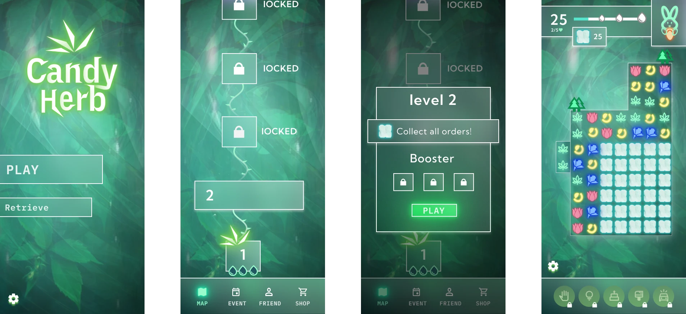
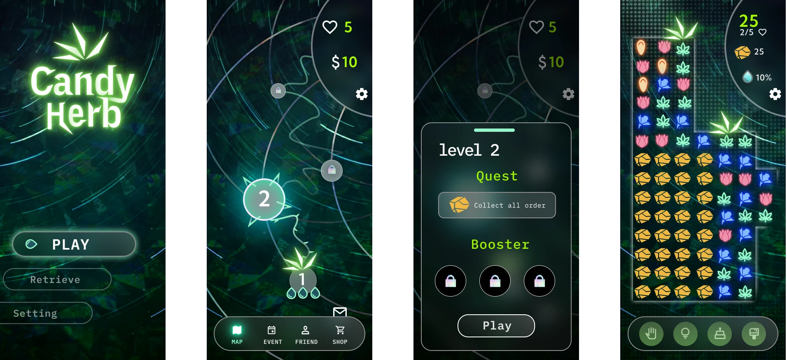
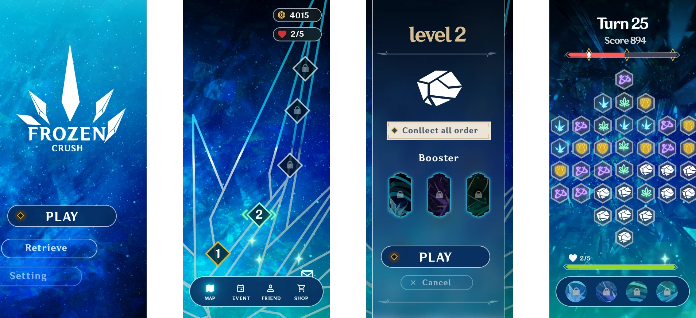
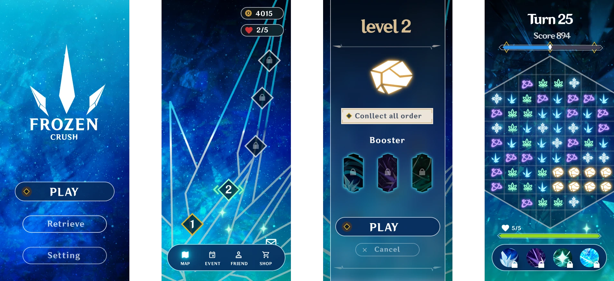
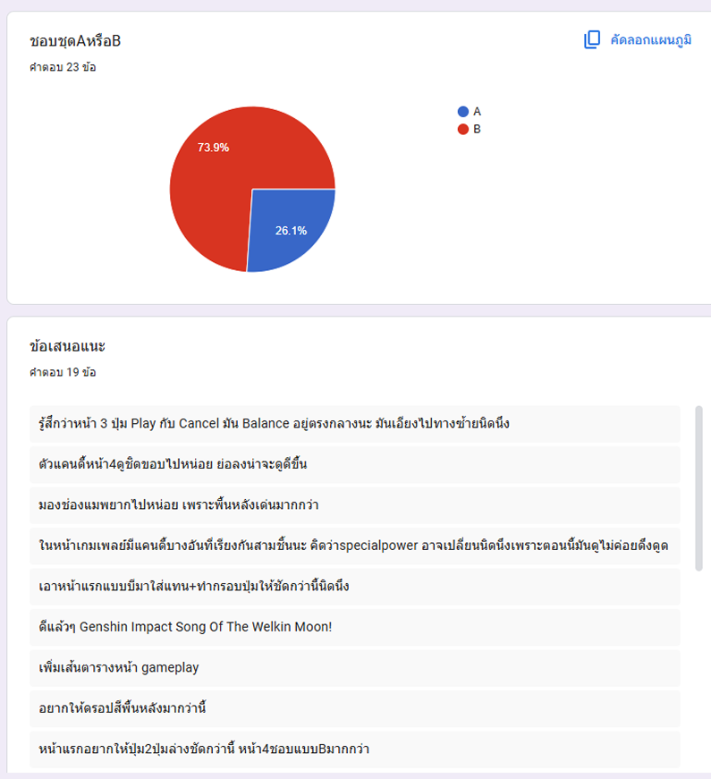

โปรเจ็คนี้เป็นการออกแบบ UI/UX สำหรับเกมแนว Puzzle (Match-3) โดยเริ่มจากการสร้าง User Persona เพื่อเข้าใจกลุ่มเป้าหมาย แล้วนำมาออกแบบ UI ผ่าน 5 Iterations พัฒนาจาก Mockup V.1 ถึง V.5 โดยมีการทำ A/B Testing เก็บ Feedback จากผู้ใช้จริงเพื่อปรับปรุงอย่างต่อเนื่อง

เริ่มจากสร้าง User Persona เพื่อทำความเข้าใจกลุ่มเป้าหมาย วิเคราะห์พฤติกรรม ความชอบ และ Pain Points ของผู้เล่น แล้วนำข้อมูลเหล่านี้มาเป็นแนวทางในการออกแบบ UI
ผมได้ใช้หลักการ Design Thinking ในการออกแบบ UI โดยเริ่มจากการทำความเข้าใจกลุ่มเป้าหมาย วิเคราะห์พฤติกรรม ความชอบ และ Pain Points ของผู้เล่น แล้วนำข้อมูลเหล่านี้มาเป็นแนวทางในการออกแบบ UI Star Method ในการทำUX/UI
Version แรก Theme Candy Crush ใช้สีเขียวเป็นหลัก วาง Layout เบื้องต้นตาม Visual Hierarchy ที่ได้จาก User Persona
Situation: ผมเริ่มจากการออกแบบ Candy Crush theme Herb
Task: ผมวางแผนว่าจะใช้สีเขียวโทนอ่อน เน้นนำเสนอความเรียบง่ายและความทันสมัย
Action: ผมออกแบบโดยใช้ Glassmorphism เพื่อนำเสนอความทันสมัย การใช้หลักการ Visual Hierarchy ออกแบบ
สิ่งที่ต้องการให้ User มองเห็นมีขนาดใหญ่กว่าปกติ และการใช้สีเขียวเป็นเหมือนการนำสายตา user
Result:ได้รับFeedback จากPersonar หลายอย่างมีความสว่างมากเหมือนทุกอย่างเด่นเท่ากันหมด

ปรับ Visual Hierarchy ให้ดีขึ้น เพิ่ม Contrast ให้ชัดเจน แก้ไข UI จากข้อเสนอแนะที่ได้จาก Persona
Task: ผมต้องเพิ่ม Visual Hierarchy ให้ชัดเจนและใช้Contrast ให้ดีมากขึ้น
Action: ผมออกแบบรูปทรงของปุ่มให้มีความโค้งเพื่อให้ดูมีความน่ารัก น่าเล่นเพิ่ม Contrast
ที่มากขึ้นมีการใช้หลักการHidden
เพื่อให้UI เรียบง่าย
Result: Personar มีความชอบมากแต่ให้เหตุผลว่ามันดูไม่เหมือนเป็นเกมที่ผู้หญิงจะเล่นได้
คล้ายเกมที่ออกแบบมาให้ผู้ชายเล่นมากกว่า
มันดุไม่มีความเกี่ยวข้องกับสมุนไพรเลย

เปลี่ยน Theme เป็น Frozen Crush ตาม Persona ที่ชื่นชอบ Genshin Impact ใช้โทนสีน้ำเงิน-ขาว เพื่อเพิ่ม Contrast และความสวยงาม
Task: ผมต้องทำ Ui ให้สามารถสื่อสารได้ถูกต้องตามTheme
UIต้องสามารถเล่นได้ทุกเพศ
Action: ผมเลือกที่จะเปลี่ยน Theme เพื่อสื่อสารได้ง่ายขึ้น และพยายามทำให้คล้ายเกม genshin Impact
เนื่องจากpersonar มีความชอบเกมนี้
Result: Personar มีความชอบมากในทุกส่วน ดูเรียบง่ายเข้าใจง่าย

ปรับ Layout ตาม Feedback เปลี่ยน Button Style ให้ชัดเจนขึ้น เพิ่มขอบปุ่มและ Contrast
Task: ผมรู้สึกว่า Uiดีกว่านี้ได้จึงทำ A/B Testingเพื่อดูว่าการจัด Layout
แบบไหนมีความน่าสนใจมากกว่ากัน
Action: ผมเริ่มทำ MockupV4 ที่แก้layout บางหน้าเพื่อเก็บFeedback จากเพื่อนในห้องผ่านGoogle Form
Result: ผลลัพธ์คือเพื่อชอบ Layout MockupV4หน้าท้ายมากกว่า V3

เก็บ Feedback จากผู้ใช้จริง 23 คนผ่าน Google Forms
ผู้ใช้ส่วนใหญ่เลือก V.4 (ชุด B) เนื่องจากปุ่มชัดเจนกว่า อ่านง่ายกว่า และ Layout สมดุลกว่า

Version สุดท้ายที่ปรับปรุงจากผลลัพธ์ A/B Testing นำ Feedback ทั้งหมดมาปรับปรุง — เพิ่ม Contrast สร้างความสมดุลของ Layout และปรับ Visual ให้สอดคล้องกับ Persona
Task: จากการทำ A/B Testing
ผมได้รับFeedbackมาเยอะมากคิดว่าจะปรับปรุงให้ดึตามFeedback
Action: ผมแก้พื้นหลังให้ดูง่ายมากที่สุด เน้นไปที่Contrast ความเรียบง่าย ลดทอนหลายๆส่วน
Result: ผมคิดว่าUIนี้ใช้ได้แล้ว
ผมได้เรียนรู้ว่าการทำ UX/UI ไม่ใช่แค่การออกแบบให้สวยงาม แต่ต้องคำนึงถึงผู้ใช้เป็นหลัก มีการทำ A/B Testing เก็บ Feedback จากผู้ใช้จริงเพื่อปรับปรุงอย่างต่อเนื่อง และนำข้อมูลเหล่านี้มาเป็นแนวทางในการออกแบบ UI